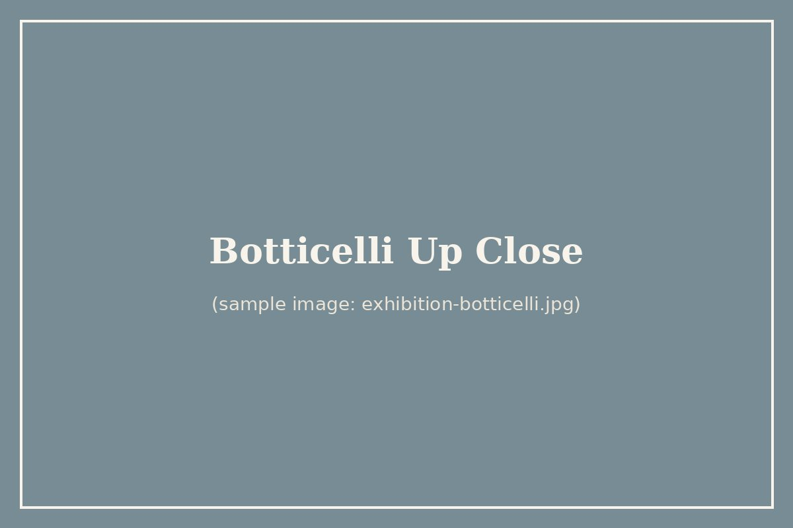
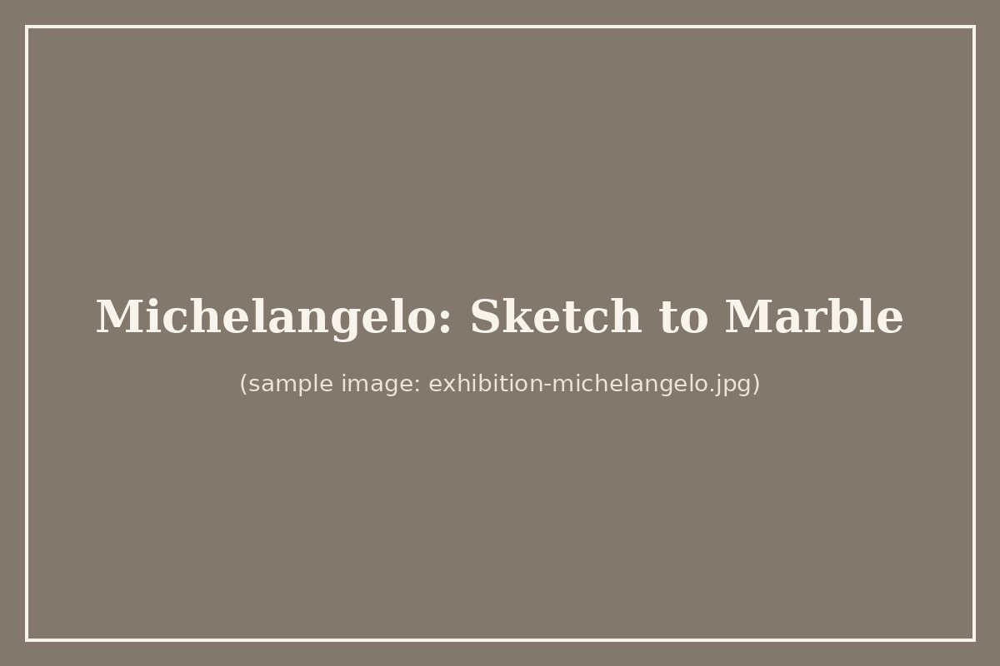
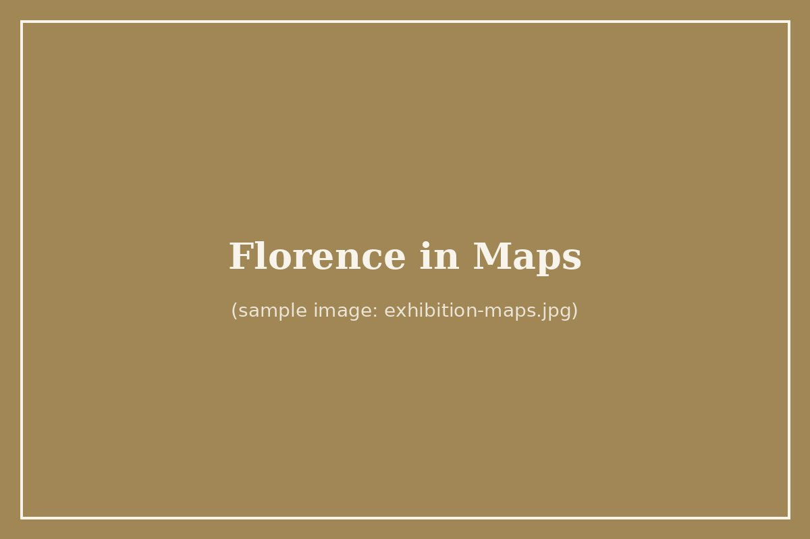

Botticelli Up Close
Uffizi Gallery
1 Oct 2026 – 31 Jan 2027A rare chance to see Botticelli's masterpieces after restoration, with high-resolution scans that reveal the brushstrokes hidden under the varnish.
Your guide to the art museums of Florence
Besides their permanent collections, Florence's museums host special exhibitions all year round. Here is what you can see now, and what is coming next.

Uffizi Gallery
1 Oct 2026 – 31 Jan 2027A rare chance to see Botticelli's masterpieces after restoration, with high-resolution scans that reveal the brushstrokes hidden under the varnish.

Galleria dell'Accademia
15 Sep 2026 – 15 Feb 2027Thirty original drawings displayed next to the statues they became, showing how Michelangelo planned his work.

Palazzo Vecchio
10 Nov 2026 – 28 Mar 2027Five centuries of the city drawn by hand, from Renaissance bird's-eye views to the first modern street plans.
Palazzo Pitti, from April 2027. Portraits of the powerful women of the Medici family, and works by Renaissance women painters who were forgotten for centuries.
Bargello Museum, from May 2027. How Donatello brought bronze sculpture back to life, with casts, tools and his most famous statues side by side.
Museo dell'Opera del Duomo, from June 2027. The story of Brunelleschi's dome, with original wooden models and the machines used to lift the stones.
Uffizi Gallery, summer 2027. Late opening every Friday until 22:00, with guided tours by candlelight and music in the courtyard.